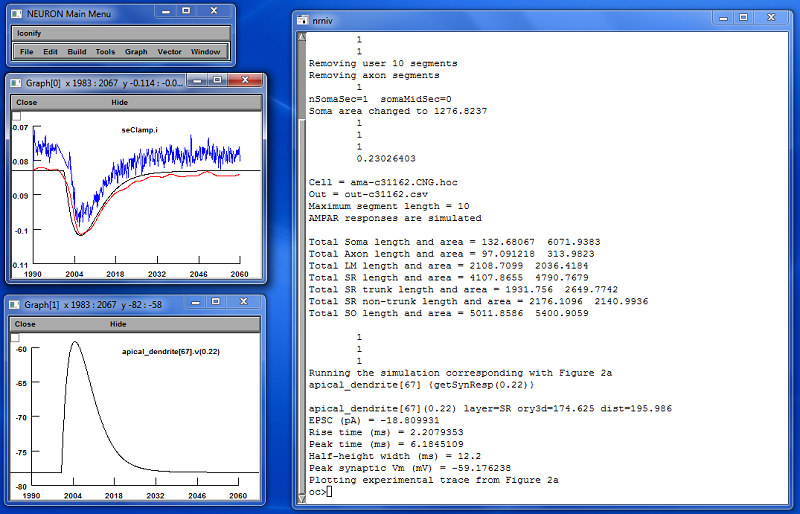

Unlike some Neuron models, the intent of this model is primarily to facilitate batch simulations involving the analysis of thousands of individual data traces across multiple cells. Data traces from single synaptic simulations can be obtained as described below, but no user-friendly pushbutton interface is provided for doing so. Batch simulations create summary results for each synaptic activation but do not save individual data trace results.
In executing the model it may be useful to understand the role of the different HOC files provided. These files fall into the following groups.
Files from this model can be copied to a directory of the user's choice. The model can then be executed using a recent release of Neuron. Versions 6 and 7 were used during the preparation of the article, but there should be only small differences between results using different execution platforms and different Neuron releases. Of course, MOD files must be compiled before the model can be executed. This is done using the usual commands. For MS Windows use the mknrndll command and for Unix use nrnivmodl. File exp2nmdar.mod is used to simulate NMDA receptors using a dual-exponent model. Other MOD files are associated with the various active models considered in the article.
Files demo.hoc, file demo.ses, and files beginning
with demo-fig2a are
included to permit a simple verification of the installation of the
model and to illustrate a method for obtaining the results of a single
synaptic activation by invoking functions from the Neuron command line.
This demonstration reproduces the synaptic activation shown in Figure
2a of the article. It can be launched either directly from demo.hoc or else by loading demo.hoc into Neuron using the load hoc menu item, provided
that the current directory has previously been set to the directory
containing the files of this model. demo.hoc automatically loads
the other files as needed in turn. Results of executing the demo
should, after some rearranging of windows, look like the following.

Simulation parameters are defined in the beginning of file synresp.hoc and must be set as appropriate for the type of simulation being performed. See synresp.hoc for a description of each of these parameters. For parameter settings used in generating files supporting figures in the article, see file params-by-fig.csv. Note that synresp.hoc is loaded by one of the cell-specific HOC files and will not function correctly without the necessary cell-specific parameter values being set before synresp.hoc is loaded.
Simulations are started by invoking Neuron and loading one of the cell-specific HOC files. This can be done in the usual way, but depends on the type of system being used. For example, in MS Windows, Neuron is typically associated with files containing the suffix .hoc and it is sufficient to double-click on a cell-specific HOC file (for example synresp-cell1zr.hoc) to launch the simulation. Before loading the cell-specific HOC file using the Neuron menu item File->load hoc, set the current directory to be the directory containing synresp.hoc and other model files using the menu item File->working dir.
Control parameters of particular interest are isInteractive, which controls whether interactive components of Neuron are loaded, and runStim, which controls whether or not stimulations for synaptic activations are initiated automatically when synresp.hoc is loaded. For batch executions, normal settings would be isInteractive=0 and runStim=1. For running simulations under manual control, the settings would be isInteractive=1 and runStim=0, which are the values set initially in the copy of synresp.hoc supplied here.
Manually Controlled ExecutionWhen executing manually controlled simulations, the following functions defined in synresp.hoc can be invoked from the Neuron command line:
Output files are in comma-separated-values (.csv) format and contain the following columns:
| Column |
Contents |
| time | event time in ms |
| soma | either somatic current injection for voltage-clamp (pA) or somatic membrane potential for current-clamp (mV) |
| dend | membrane potential in the dendrite at the site of the synapse (mV) |
| iampar |
AMPA receptor currents (pA) |
| inmdar | NMDA receptor currents (pA) |
Sample data traces used in the article are included here to permit testing of any new installations of the model. Correspondence between figures and the traces files is:
| Figure |
Sample Trace File Name |
| 2a |
out-vc-ampar-c31162-ad67-022.csv |
| 2b |
out-vc-ampar-c62563-ad54-054.csv |
| 2c |
out-vc-nmdar-l51-ad7-036.csv |
| 2d |
out-vc-nmdar-c81463-ad87-082.csv |
| 8a SR |
out-vc-ampar-c62563-ad2-01667.csv |
| 8a SLM |
out-vc-fastampar-c62563-ad2-01667.csv |
Note that the synaptic stimulation event occurs at t=2000 ms. Data values appearing prior to that time are associated with settling of the simulated cell from its initial rest state under the influence of either a current or voltage clamp at the soma as appropriate. After loading the model into Neuron, data traces were written to external files using HOC commands of the form:
By convention, values for the receptor type, clamp mode, cell name,
section number, and position were encoded into the output file name,
though this is not enforced by the model software. The output file name
should be placed in string variable savePath before using the above
command.
Data in the generated files can be plotted using a number of tools. Most statistical packages are capable of reading .csv files such as these. For example, when using the statistical package R, the following procedure can be used to generate a simple EPSC plot:
When runStim=1 is specified, the function sampleSynResps() is automatically invoked to sample synaptic responses throughout the current cell. A comma-separated-values (.csv) file is written containing the following columns:
| Column |
Contents |
| section |
section name of the section
containing the synapse being simulated (string) |
| loc |
location of the synapse within
the section containing the synapse (value 0-1) |
| layer |
layer containing the synapse.
One of: SO, SR, or LM. |
| y |
synapse y-axis value along the
reoriented cell apical direction (microns, SO negative) |
| dist |
path distance from the cell soma
midpoint to the synapse (microns) |
| len |
axial length of the segment
containing the synapse (microns) |
| area |
membrane area of the segment
containing the synapse (microns) |
| trunk |
1 if the synapse lies on a
contiguous path from the soma to layer LM; 0 otherwise |
| type |
recording mode simulated. CC for
current-clamp and VC for voltage-clamp |
| peakValue |
peak somatic response relative
to rest (pA for VC, mV for CC) |
| peakTime |
time of peak somatic response
following synaptic activation (ms) |
| halfWidth |
half-height width of somatic
response (ms) |
| synRest |
rest membrane potential at the
location of the synapse (mV) |
| synPeak |
peak membrane depolarization at
the synapse (mV, not relative to rest) |
| gAMPAR |
conductivity of simulated AMPA
receptor (nS) |
| tau1AMPAR |
fast time constant of AMPA
receptor model (ms) |
| tau2AMPAR |
slow time constant of AMPA
receptor model (ms) |
| gNMDAR |
conductivity of simulated NMDA
receptor (nS) |
| tau1NMDAR |
fast time constant of NMDA
receptor model (ms) |
| tau2NMDAR |
slow time constant of NMDA
receptor model (ms) |
The path name of the output file must be placed in the variable outPath. This is done in the cell-specific HOC files before synresp.hoc is loaded. Note that for batch execution, individual synaptic activation data traces are not saved.
Procedures for automating simulations involving multiple cells can be implemented in Unix systems through shell scripts and in MS Windows through batch command files. In this case, it may be useful to redirect sysout to a file so that the simulation results can be scanned for any error messages. Similarly, scripts can be developed to improve load balancing when simulating multiple cells on a multi-core system. These, however are left as an exercise for the reader because of differences among execution platforms.
Author Contact InformationFor questions regarding this model, please contact the article's corresponding author, Dr. Giorgio Ascoli. His email address is (replace -at- with the usual @ symbol): ascoli-at-gmu.edu